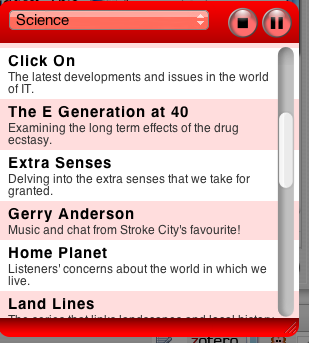
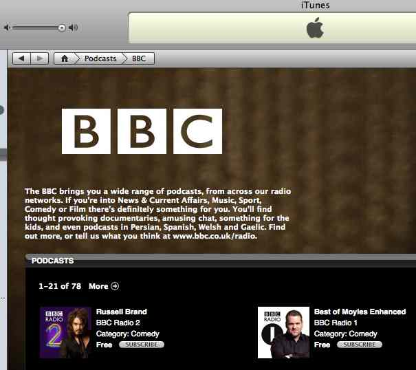

... or should that be Web tvOU (tee - voo? tee - vo - you (though that's a bit too like TiVo maybe?)).
Martin Belam/currybet dot net posted last week about the Virgin Radio Player Beta (we're still waiting for the BBC Player too, of course):
Apart from having the streaming area and radio controls, the player features content areas as well. There is an encouragement to interact with the show on air via email, text and the telephone. It also offers integrated music news headlines, and the opportunity to watch videos as well - yet another example of the internet enabling radio and radio stations to break out of their spectrum scarcity driven audio-only constraints.
The reason I think the Virgin player is worth watching is in part because of the other Virgin Media play at the moment that is focusing on the four way phone/mobile/broadband/TV approach. As I understand it, Virgin Radio is independent of the Virgin Media group, but the cross-branding opportunities surely must be there?
In a similar vein to the Virgin radio player, I also just discovered a rather neat BBC Listen Again Dashboard widget*. This widget scrapes BBC 'listen again' pages and then provides links to the streamed audio. After clicking on a program link, the audio stream is played via an embedded Real Audio player.

[* Hmm - are there any dashboard2google widget converters out there? Or do the current batch of converters like Amnesty converter just port stuff into the OS/X Dashboard? The Dashboard increasingly seems like a sink for widgets from other platforms... which is actually a :-(, IMHO]
The 'BBC Listen Again' widget is particularly interesting from an OU perspective because of the large number of co-productions with the BBC that we have been - and continue to be - involved with. For whatever reason, simple (one-click) listen again links to co-pro broadcasts do not tend to be provided from the Open2.net site though, although with a little mashery (as demonstrated by the BBC Listen Again widget) this is easily rectified...;-)
When I first saw the BBC Listen Again widget, my first thought was 'excellent - we can use this to deliver a set of links to a series of programmes that could add value to an OU course directly to a student's desktop'; secondly, that we could distribute 'promotional widgets' containing samples of different OU/BBC programmes to potential students, as well as to the broader categories of informal, self-motivated learners and general interest audiences; thirdly, that BBC programme bundles could be provided to add value to/augment OpenLearn course units; and finally, that maybe we could start one or more subject (faculty?) related OU channels delivered via customised widgets.
Whether or not the BBC would be happy for this sort of reuse (or at least, this form of republication of links to publicly available content) is moot. For example, all six programmes from the recently broadcast Click On series are currently available as 'listen again' content. However, the links are not made available in a simple machine readable format, such as RSS (for that, you have to look here: Listen Again to Click On), which maybe suggests that the Beeb want people to access the content only via the programme web page?
Anyway, I've started tinkering with the Listen Again widget so that it can consume RSS feeds and extract programme info/links from them. When I get it working, this means I'll be able to use delicious, for example, to compile BBC playlists for playing through the widget. (The availability of the feed also means it will be trivial to access the content in Stringle if (when...?!) the Grazr folks get Real Audio player embedding sorted out!;-)
On the topic of custom channels, I guess I should also mention here last week's announcement of a BBC and YouTube Deal which will see three BBC channels appear on YouTube:
Discussions on how to use BBC/OU content in the context of OpenLearn, as well as more generally in the context of the OU's broadcasting strategy, are whizzing around here at the moment and are looking at issues closely related to the above.
I know one or two people in the OU who are keen to see us getting out legacy content out there even more aggressively than we already are with OpenLearn, so it'll be interesting to see if we pick up on the BBC's lead and start to explore the possiblitiy of an OU YouTube channel, in the same way that we presumably followed the BBC lead in signing up to the Creative Archive project.
In the same breath, it maybe also be worth our while considering launching an audio channel on iTunesU (the BBC already has channels on iTunes - for example, and several US educational institutions have iTunes U channels).

And then of course are the plethora of free digital channels, whether delivered by satellite and/or cable, as well (increasingly) free and subscription on-demand broadband video delivery systems; I now have two broadband on-demand video services installed on my laptop, for example: the free (?) Joost (I got my beta invite last week :-) and the largely pay-on-demand based 4od.
What is, I think, hard to understand is why the OU - the original 'University of the Air' (and arguably the UK's 'public service educator'?!), with its significant archive of broadcast (and not quite broadcast) quality content, is not obviously making forays into these new areas of online broadcast, and if anything is lagging behind the more adventurous institutions in the sector.
Rights issues act against us, I suppose - I'd imagine that the original rights negotiations did not anticipate the emergence of the web and open content licensing.
On the matter of channels, one of the interesting questions that I think the OpenLearn project has posed is what sort of environment or delivery channel is appropriate for the delivery of open content licensed educational materials to informal and semi-formal learners.
Looking at Martin Belam's review of the Virgin Radio Player, as well as the more limited audio specific offerings of the Listen Again widget, I wonder what sort of role the widget approach can play as part of a platform for the ongoing delivery of subject/topic specific learning channels as well as a self-contained one-shot content giveaways?
In the OpenLearn context, an email thread on related matters with Simon Buckingham Shum led to him coining (to my hearing at least) the idea of learning widgets.
Although the nature of learning widgets was not really explored at the time, they could perhaps be thought of as micro-courses bundled up in a multimedia serving widget - like a self-contained content widgetLE, perhaps?!
(As an aside to the thread, Marc Eisenstadt suggested I might try to develop a role as a learning widget evangelist (cf. the role of technology evangelist), which also appeals!;-)
To get an idea of how a multimedia learning widget might work, consider SplashCast. Splashcast allows you to create - and deliver - multimedia programmes via a browser widget. Here's one, for example, from TEDTalks (you'll probably need to visit the actual blog post page to see this - it's unlikely to be displayed in a feed reader):
There's a broadcast review meeting on at the OU next week. I wonder if anyone will bring up Splashcast? ;-)
Posted by ajh59 at March 8, 2007 09:42 PM"What is, I think, hard to understand is why the OU ... is not obviously making forays into these new areas of online broadcast, and if anything is lagging behind the more adventurous institutions in the sector."
Fair point. You seen that The Open University Malaysia has launched an internet radio service this week?
http://www.oum.edu.my/portal/index.php?op=view&m=1&page=226
Now, if just 0.01% of UK Open University's 200,000 students were serious about exploring audio as a medium we could have ourselves a viable radio station. Sign up for OUseful Radio here!